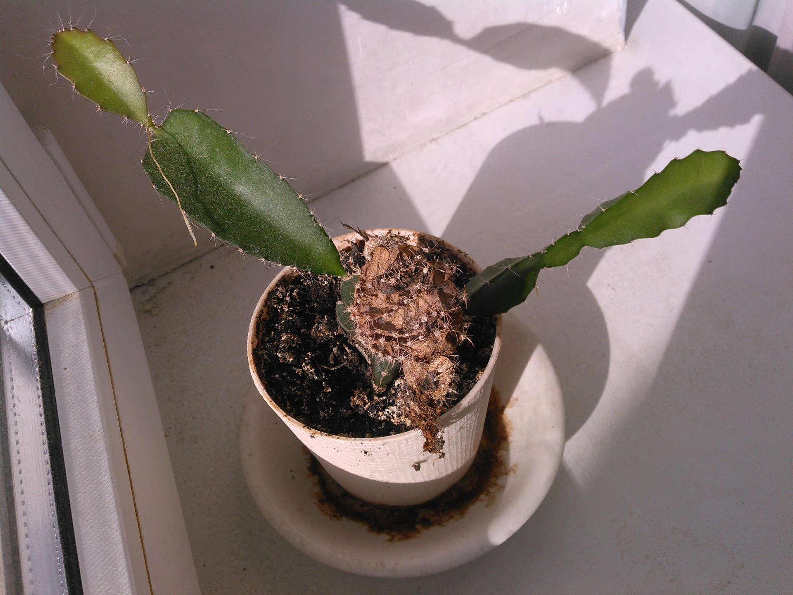

До и после того как кактус шибануло окном
Before and after it was bashed by a window
Красная часть после этого засохла а зелёная пустила ростки
The red bit then died but the green bit sprouted more of itself

Первые ростки уткнулись в землю и больше не росли, но средний вырос так сильно что угрожал опрокинуть горшок
The first two sprouts ended up pressed into the ground and stuck there but the middle one had grown so much it threatened to tip over the entire pot
Потому было применено инженерное решение
So the engineering solution was employed
По мере отрастания ростки подрезались и прицеплялись на опору
Growth continued so extra bits were trimmed and tied to support
Последняя картинка показывает актуальное состояние кактуса. Спустя 7 лет после приобретения я наконец воспользовался поиском в интернете и обнаружил, что обладаю засохшей безхлорофильной формой
гимнокалициума Михановича, привитой на
питаю. Обладание этой информацией ни на что не повлияло.


{kind=link}
{kind=link}
{kind=link}
{kind=link}
{kind=link}
{kind=link}
{kind=link}